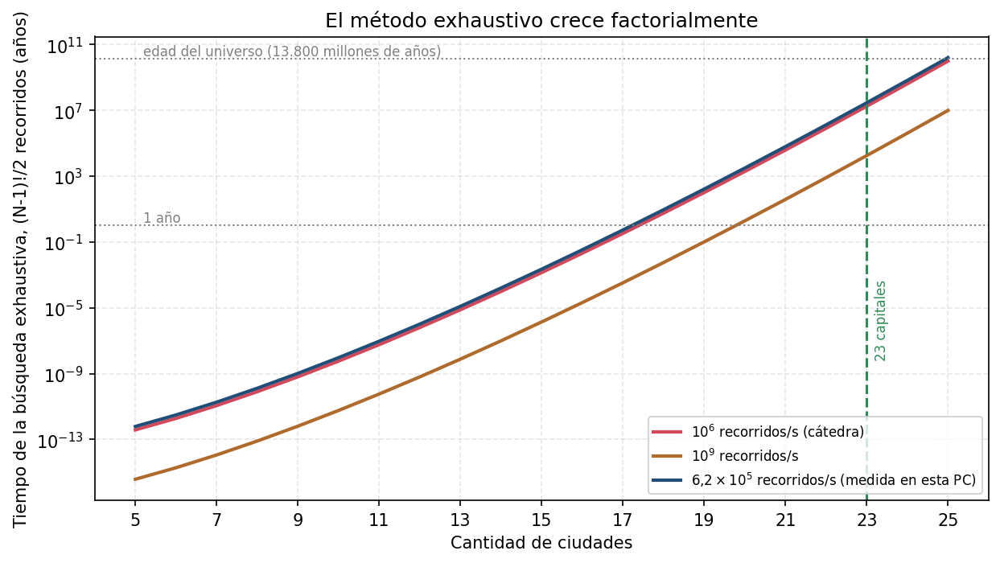
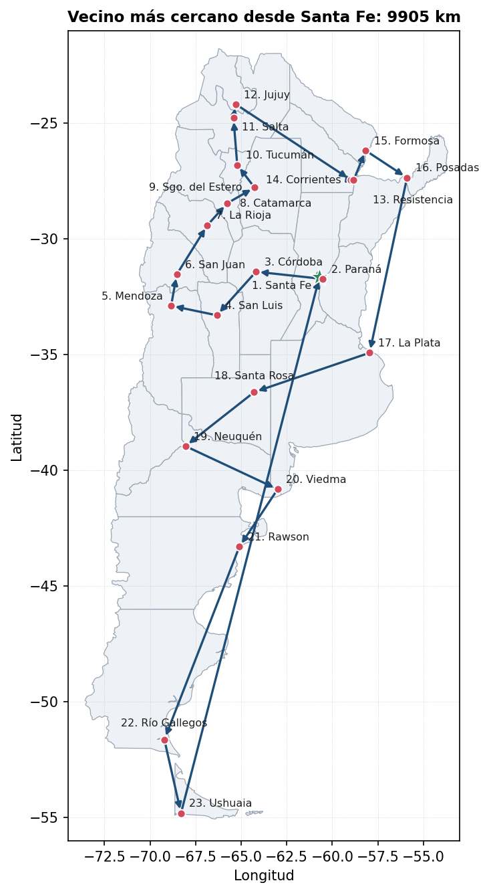
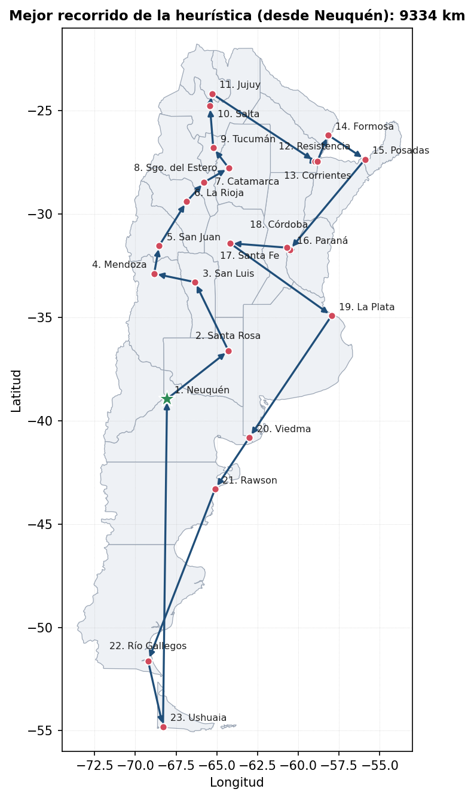
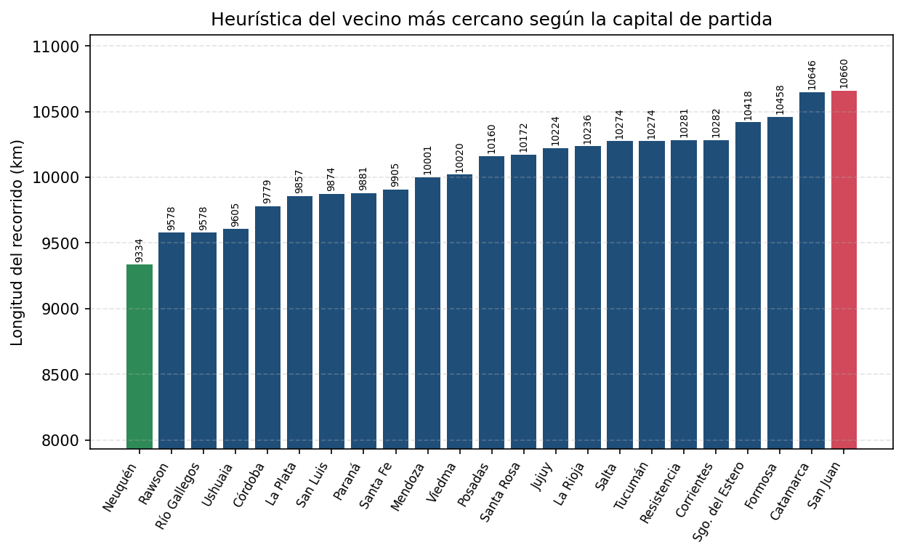
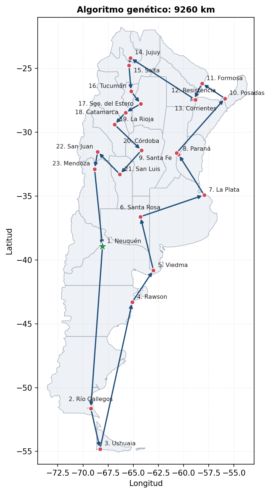
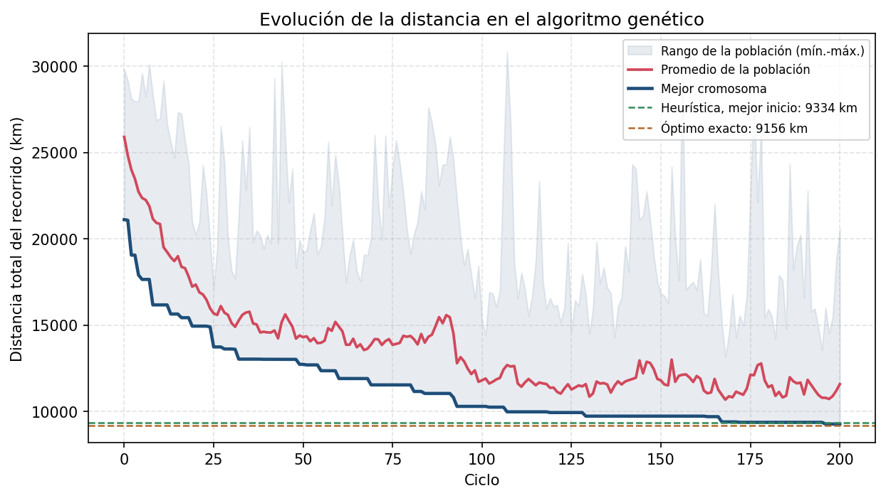
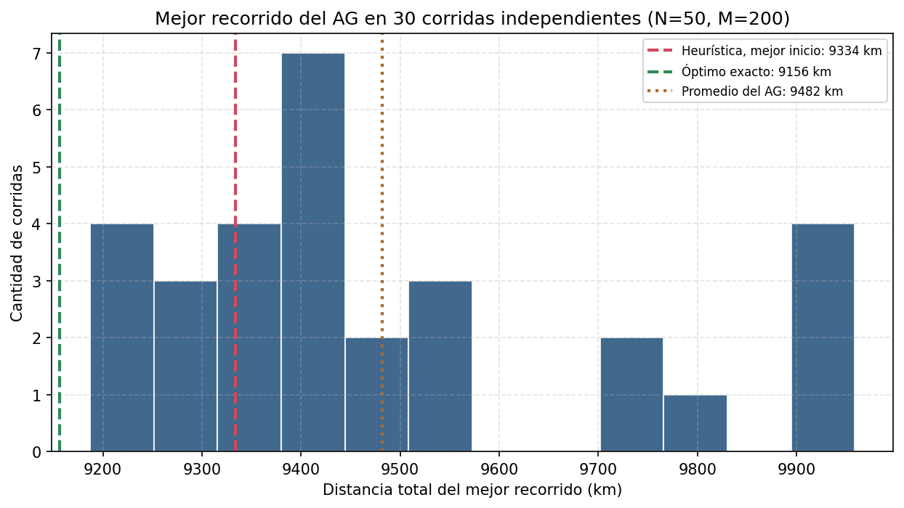
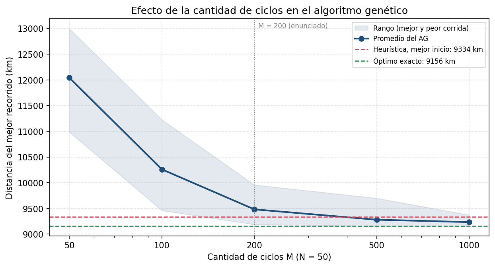

1. Introducción y datos del problema
El problema del viajante (TSP, Traveling Salesman Problem) es uno de los problemas más famosos de la optimización combinatoria. Dadas N ciudades y la matriz de distancias D de N × N, donde d[x, y] es la distancia entre las ciudades X e Y, se busca una ruta que comience y termine en una ciudad concreta, pase una sola vez por cada una de las demás y minimice la distancia recorrida. Toda solución es una permutación de las ciudades, con el regreso a la ciudad de partida.
El enunciado pide resolverlo para las capitales de las provincias argentinas: justificar de manera teórica por qué el método exhaustivo no alcanza (punto 1), resolverlo con la heurística «desde cada ciudad ir a la ciudad más cercana no visitada» desde una capital elegida y desde todas (puntos 2a y 2b) y con un algoritmo genético de N = 50 cromosomas, M = 200 ciclos y crossover cíclico (punto 2c), comparando los resultados.
Los datos: la tabla de distancias de la cátedra
Las distancias salen de la tabla que entregó la cátedra [2] (Matriz/TablaCapitales.xlsx): kilómetros en línea recta entre cada par de capitales. El programa la lee directamente del archivo. La tabla se contrastó con la fórmula de Haversine aplicada a las coordenadas de cada capital: es simétrica, tiene diagonal nula y la diferencia relativa media es de 0,36 %. La mayor diferencia relativa (16 %) es la de Resistencia-Corrientes, ciudades enfrentadas sobre el río Paraná (13 km en la tabla y 15,5 km con Haversine). Las coordenadas sólo se usan para dibujar los mapas, con los límites de provincias de Natural Earth [8].
23 ciudades y no 24. La tabla trae 24 filas: las 23 capitales de provincia y la Ciudad Autónoma de Buenos Aires. El enunciado pide capitales de provincia y define cromosomas de 23 genes, por lo que se excluyó la Ciudad Autónoma, que no es capital de una provincia, y la provincia de Buenos Aires queda representada por La Plata (a 53 km de la Ciudad Autónoma). Como control, con la Ciudad Autónoma como ciudad 24 el mejor inicio de la heurística daría 9.335 km (desde Neuquén), apenas 1 km más que con 23 ciudades.
Codificación: qué es cada gen
Un cromosoma es una permutación de los números 1 a 23, y cada gen es una capital según esta tabla (el orden es el alfabético por provincia):
| Gen | Capital | Provincia |
|---|---|---|
| 1 | La Plata | Buenos Aires |
| 2 | San Fernando del Valle de Catamarca | Catamarca |
| 3 | Resistencia | Chaco |
| 4 | Rawson | Chubut |
| 5 | Córdoba | Córdoba |
| 6 | Corrientes | Corrientes |
| 7 | Paraná | Entre Ríos |
| 8 | Formosa | Formosa |
| 9 | San Salvador de Jujuy | Jujuy |
| 10 | Santa Rosa | La Pampa |
| 11 | La Rioja | La Rioja |
| 12 | Mendoza | Mendoza |
| Gen | Capital | Provincia |
|---|---|---|
| 13 | Posadas | Misiones |
| 14 | Neuquén | Neuquén |
| 15 | Viedma | Río Negro |
| 16 | Salta | Salta |
| 17 | San Juan | San Juan |
| 18 | San Luis | San Luis |
| 19 | Río Gallegos | Santa Cruz |
| 20 | Santa Fe | Santa Fe |
| 21 | Santiago del Estero | Santiago del Estero |
| 22 | Ushuaia | Tierra del Fuego |
| 23 | San Miguel de Tucumán | Tucumán |
El programa entregado
Todo el trabajo está en TP3/main.py (Python 3.10 o superior, probado con 3.13, con numpy, matplotlib y openpyxl). Al ejecutarlo sin argumentos abre el menú del enunciado: a) heurística desde la capital que ingrese el usuario, con mapa de la República, ciudad de partida, recorrido completo y longitud; b) mejor recorrido de la heurística probando todas las capitales; c) algoritmo genético. Además tiene d) el análisis del método exhaustivo del punto 1 y e) el óptimo exacto de referencia. Con --todo --optimo --calibrar se regeneran sin menú todos los resultados, tablas y mapas de este informe (carpeta outputs/), y con --verificar se comprueban la tabla, el crossover cíclico y la validez de los cromosomas.
2. Punto 1: el método exhaustivo, ¿puede resolver el problema?
Respuesta: no. Un método exhaustivo enumera todas las rutas posibles, calcula la longitud de cada una y se queda con la menor. Garantiza el óptimo, pero la cantidad de rutas crece de forma factorial con la cantidad de ciudades, y con 23 capitales deja de ser calculable en un tiempo razonable.
Cuántas rutas hay
Con N ciudades hay N! permutaciones (los «ciclos» del criterio de la cátedra). Si se fija la ciudad de partida quedan (N−1)!, y si además se descuenta que cada circuito puede recorrerse en los dos sentidos, (N−1)!/2. Para controlar la fórmula con el video de la Fuente [4]: con 5 ciudades hay 4!/2 = 12 rutas y con 10 ciudades, 9!/2 = 181.440. Para las 23 capitales:
N! = 2,59 × 1022 | (N−1)! = 1,12 × 1021 | (N−1)!/2 = 5,62 × 1020
Si cada recorrido pudiera evaluarse en un microsegundo (el supuesto de la cátedra), las 23 capitales llevarían 820 millones de años con el criterio de N! ciclos y 18 millones de años descontando la ciudad de partida y el sentido inverso. Aun a 109 recorridos por segundo, una velocidad que una implementación simple no alcanza, serían 17.820 años.
| Ciudades (N) | Ciclos N! | Tiempo a 1 µs por ciclo | Recorridos (N−1)!/2 | Tiempo a 1 µs por recorrido |
|---|---|---|---|---|
| 5 | 120 | menos de 1 ms | 12 | menos de 1 ms |
| 10 | 3,63 × 106 | 3,6 s | 181.440 | 0,18 s |
| 15 | 1,31 × 1012 | 15,1 días | 4,36 × 1010 | 12,1 h |
| 20 | 2,43 × 1018 | 77.146 años | 6,08 × 1016 | 1.928 años |
| 23 | 2,59 × 1022 | 820 millones de años | 5,62 × 1020 | 18 millones de años |
| 25 | 1,55 × 1025 | 4,9 × 1011 años | 3,10 × 1023 | 9,8 × 109 años |
Medición propia
Para no quedarse sólo con la cuenta, se resolvió por fuerza bruta (todas las permutaciones, ciudad de partida fija) el problema con las primeras 5 a 10 ciudades de la tabla y se midió el tiempo. Cada ciudad más multiplica el tiempo por aproximadamente N−1 (de 9 a 10 ciudades, ×10,1). La velocidad medida en esta computadora, unos 6,2 × 105 recorridos por segundo, es del orden del microsegundo por recorrido que supone la cátedra, y con ella las 23 capitales llevarían 29 millones de años.
| Ciudades | Recorridos evaluados ((N−1)!) | Tiempo medido | Recorridos por segundo |
|---|---|---|---|
| 5 | 24 | 0,03 ms | 6,98 × 105 |
| 6 | 120 | 0,13 ms | 9,52 × 105 |
| 7 | 720 | 0,88 ms | 8,22 × 105 |
| 8 | 5.040 | 6,36 ms | 7,92 × 105 |
| 9 | 40.320 | 58 ms | 6,97 × 105 |
| 10 | 362.880 | 586 ms | 6,19 × 105 |

Justificación teórica: el TSP es NP-difícil
La razón de fondo no es la velocidad de la computadora sino la complejidad del problema. Según la Fuente [3], un problema es NP-completo si es un problema de decisión que está en NP (una respuesta se verifica en tiempo polinomial) y si todo problema de NP puede reducirse a él en tiempo polinomial; un problema NP-difícil es al menos tan difícil que los de NP, aunque no tiene por qué ser de decisión ni estar en NP. La versión de optimización del viajante (hallar el recorrido mínimo) es NP-difícil, y su versión de decisión («¿existe un recorrido de a lo sumo K kilómetros?»), que se obtiene poniéndole un límite como en el ejemplo de la ruta de nueve horas de la Fuente [3], es NP-completa. Por eso la cátedra lo ubica entre los problemas NP-completos.
Hoy no se conoce ningún algoritmo que resuelva un problema NP-completo en tiempo polinomial: si se encontrara uno, todos los problemas de NP quedarían resueltos en tiempo polinomial y P sería igual a NP, una de las preguntas abiertas más importantes de la matemática y de la computación (uno de los siete problemas del milenio) [5]. El viajante es justamente uno de los problemas más difíciles de NP [4][5]. En la práctica, los algoritmos exactos conocidos tienen costo exponencial en la cantidad de ciudades, y un método exhaustivo es el peor de ellos: (N−1)!/2 evaluaciones.
Matiz: exhaustivo no es lo mismo que exacto. Existen algoritmos exactos más inteligentes que evitan enumerar todas las rutas. El de Held y Karp [6], por programación dinámica, tiene costo O(N²·2N), y la Fuente [4] señala que los mejores algoritmos exactos bajan de (N−1)!/2 a N²·2N. Para N = 23 son unas 4,4 × 109 operaciones: alcanzan para resolver esta instancia, y se lo usó como referencia: el recorrido óptimo de las 23 capitales mide 9.156 km (se calculó en 8 segundos y se contrastó con la fuerza bruta en instancias de 6, 8 y 9 ciudades). Pero sigue siendo exponencial: con 50 ciudades serían del orden de 2,8 × 1018 operaciones, y con (N−1)!/2 el problema ya era inabordable con 23. Para instancias grandes se recurre a métodos aproximados, como la heurística y el algoritmo genético de este trabajo.
Conclusión del punto 1: el método exhaustivo no puede resolver el problema de las 23 capitales: tendría que evaluar del orden de 5,6 × 1020 recorridos, lo que lleva millones de años, y el TSP pertenece a una clase de problemas para los que no se conoce ningún algoritmo polinomial. De ahí que se recurra a heurísticas y a algoritmos genéticos, que no garantizan el óptimo pero dan buenas soluciones en tiempo razonable.
3. Punto 2a: heurística desde la capital elegida por el usuario
La heurística pedida es la del vecino más cercano: se parte de la capital elegida, desde cada ciudad se va a la ciudad no visitada más cercana y, cuando ya se visitaron todas, se regresa a la ciudad de partida. Es determinista (los empates se resuelven por el menor índice), muy simple y de costo O(N²), pero decide sólo con la información local: no garantiza el óptimo.
En el menú del programa, la opción a) muestra la lista de capitales y permite ingresar la provincia, su capital o su número. Informa la ciudad de partida, el recorrido completo tramo a tramo con sus kilómetros y la longitud total, y presenta el mapa de la República con el recorrido, el orden de visita y la ciudad de partida marcada con una estrella. Como ejemplo se tomó Santa Fe, capital de la provincia de la facultad:
Ciudad de partida: Santa Fe (provincia de Santa Fe)
Recorrido: Santa Fe → Paraná → Córdoba → San Luis → Mendoza → San Juan → La Rioja → Catamarca → Sgo. del Estero → Tucumán → Salta → Jujuy → Resistencia → Corrientes → Formosa → Posadas → La Plata → Santa Rosa → Neuquén → Viedma → Rawson → Río Gallegos → Ushuaia → Santa Fe
Longitud del trayecto: 9.905 km

El resultado muestra la debilidad típica de la heurística: al ir siempre a lo más cercano, va dejando de lado las ciudades extremas y termina obligada a un tramo de regreso muy largo: de Ushuaia a Santa Fe hay 2.641 km, el 27 % del recorrido total. El largo del trayecto depende de la capital elegida, lo que se analiza en el punto siguiente.
4. Punto 2b: mejor recorrido de la heurística
Para encontrar el recorrido mínimo que da la heurística se la aplica desde cada una de las 23 capitales y se elige la de menor longitud. La opción b) del programa lo hace (los 23 recorridos se calculan en 1,3 ms en total), imprime la tabla completa, el recorrido ganador, su longitud y el mapa.
| N° | Capital de partida | Provincia | Longitud (km) | Diferencia con el mejor (km) | Diferencia (%) |
|---|---|---|---|---|---|
| 1 | Neuquén | Neuquén | 9.334 | - | - |
| 2 | Rawson | Chubut | 9.578 | +244 | 2,6 % |
| 3 | Río Gallegos | Santa Cruz | 9.578 | +244 | 2,6 % |
| 4 | Ushuaia | Tierra del Fuego | 9.605 | +271 | 2,9 % |
| 5 | Córdoba | Córdoba | 9.779 | +445 | 4,8 % |
| 6 | La Plata | Buenos Aires | 9.857 | +523 | 5,6 % |
| 7 | San Luis | San Luis | 9.874 | +540 | 5,8 % |
| 8 | Paraná | Entre Ríos | 9.881 | +547 | 5,9 % |
| 9 | Santa Fe | Santa Fe | 9.905 | +571 | 6,1 % |
| 10 | Mendoza | Mendoza | 10.001 | +667 | 7,1 % |
| 11 | Viedma | Río Negro | 10.020 | +686 | 7,3 % |
| 12 | Posadas | Misiones | 10.160 | +826 | 8,8 % |
| 13 | Santa Rosa | La Pampa | 10.172 | +838 | 9,0 % |
| 14 | Jujuy | Jujuy | 10.224 | +890 | 9,5 % |
| 15 | La Rioja | La Rioja | 10.236 | +902 | 9,7 % |
| 16 | Salta | Salta | 10.274 | +940 | 10,1 % |
| 17 | Tucumán | Tucumán | 10.274 | +940 | 10,1 % |
| 18 | Resistencia | Chaco | 10.281 | +947 | 10,1 % |
| 19 | Corrientes | Corrientes | 10.282 | +948 | 10,2 % |
| 20 | Sgo. del Estero | Santiago del Estero | 10.418 | +1.084 | 11,6 % |
| 21 | Formosa | Formosa | 10.458 | +1.124 | 12,0 % |
| 22 | Catamarca | Catamarca | 10.646 | +1.312 | 14,1 % |
| 23 | San Juan | San Juan | 10.660 | +1.326 | 14,2 % |
El mejor inicio es Neuquén, con 9.334 km; el peor, San Juan, con 10.660 km. Según la capital de partida la longitud varía 14 % (promedio de los 23 inicios: 10.065 km; mediana: 10.160 km). Es decir que la calidad de la heurística depende mucho de por dónde se empiece.
Recorrido mínimo de la heurística (desde Neuquén):
Neuquén → Santa Rosa → San Luis → Mendoza → San Juan → La Rioja → Catamarca → Sgo. del Estero → Tucumán → Salta → Jujuy → Resistencia → Corrientes → Formosa → Posadas → Paraná → Santa Fe → Córdoba → La Plata → Viedma → Rawson → Río Gallegos → Ushuaia → Neuquén
Longitud del trayecto: 9.334 km


5. Punto 2c: algoritmo genético
Diseño
- Cromosoma. Permutación de los 23 genes (cada gen es una capital). El circuito es cíclico, así que las 23 rotaciones de un cromosoma son el mismo recorrido; para compararlos se los escribe empezando por la misma ciudad.
- Función objetivo. La distancia total del circuito, D = Σ d[ci, ci+1] + d[c23, c1] (en kilómetros, con la tabla de la cátedra). Se la minimiza.
- Aptitud. La ruleta necesita que a mejor cromosoma le corresponda mayor aptitud. Se usa la distancia del peor cromosoma de la generación menos la distancia de cada uno, más 1. Con la inversa 1/D, o con el complemento respecto de la suma, los cromosomas de longitud parecida quedan con aptitudes casi iguales y la selección apenas distingue al mejor del peor: es el problema de la «convergencia lenta» del apunte [1], que se corrige expandiendo el rango de la función objetivo. La tabla siguiente lo muestra con 30 corridas de cada variante (mismas semillas):
| Aptitud para la ruleta | Promedio (km) | Mejor (km) | Peor (km) | Promedio sobre el óptimo |
|---|---|---|---|---|
| Escalada: distancia del peor de la generación menos la distancia, más 1 (la del programa) | 9.482 | 9.187 | 9.959 | 3,6 % |
| Inversa: 1 / distancia | 9.650 | 9.223 | 10.551 | 5,4 % |
| Complemento: suma de las distancias de la población menos la distancia | 11.054 | 9.737 | 12.090 | 20,7 % |
- Selección y elitismo. Los padres se eligen con la rueda de ruleta (con reposición) según la aptitud, y los 2 mejores cromosomas pasan intactos a la generación siguiente.
- Crossover cíclico (el pedido por el enunciado), tal como lo describe el apunte [1] (el operador es de Oliver, Smith y Holland [7]): se toma el primer gen del padre 1, se mira qué hay debajo en el padre 2, se busca ese valor en el padre 1 y se repite hasta volver a un valor ya usado; esas posiciones se heredan del padre 1 y las demás se completan con el padre 2 (el segundo hijo es el simétrico). Siempre produce permutaciones válidas, porque conserva cada gen en la posición que tenía en uno de los padres. Ejemplo con 6 genes: padre 1 = 3 4 1 5 6 2 y padre 2 = 5 1 4 6 2 3. El ciclo recorre las posiciones 1 (3, debajo 5), 4 (5, debajo 6), 5 (6, debajo 2) y 6 (2, debajo 3, que ya estaba): termina. Hijo 1 = 3 1 4 5 6 2 e hijo 2 = 5 4 1 6 2 3. El programa reproduce este ejemplo y el del apunte (--verificar) y comprueba que 500 cruces al azar de cromosomas de 23 genes dan siempre permutaciones válidas.
- Mutación. Con probabilidad PM por hijo, se eligen dos puntos al azar y se invierte el orden del tramo comprendido entre ellos (mutación por inversión, de las que el apunte [1] indica para codificaciones basadas en el orden, junto con Swap, AdjointSwap y Shift). La alternativa por intercambio de dos genes (Swap) se probó en la calibración.
- Parámetros. N = 50 cromosomas y M = 200 ciclos (enunciado), crossover cíclico, elitismo de 2 y semilla 42 para que cada corrida se pueda reproducir. Las frecuencias de crossover (PC) y de mutación (PM) quedan a criterio del grupo: se eligieron probando todas las combinaciones de PC en {60 %, 75 %, 90 %, 100 %} y PM en {5 %, 10 %, 20 %, 35 %, 50 %} con los dos operadores de mutación, 30 corridas de cada una con semillas distintas de las del resto del informe.
| Operador de mutación \ PM (promedio sobre los PC probados) | 5 % | 10 % | 20 % | 35 % | 50 % |
|---|---|---|---|---|---|
| Inversión de un tramo | 10.236 | 9.805 | 9.525 | 9.463 | 9.473 |
| Intercambio de dos genes | 11.834 | 11.237 | 10.716 | 10.587 | 10.437 |
La mutación por inversión es claramente mejor que el intercambio y las probabilidades de mutación altas (35 % a 50 % por hijo) funcionan mejor, lo que sugiere que con este crossover buena parte de la exploración la aporta la mutación. La frecuencia de crossover casi no influye (las diferencias entre los PC probados son de alrededor del 1 % y sin una tendencia clara, comparables con la variación entre corridas):
| PC (inversión, promedio sobre los PM probados) | Distancia promedio (km) |
|---|---|
| 60 % | 9.729 |
| 75 % | 9.654 |
| 90 % | 9.751 |
| 100 % | 9.668 |
La mejor combinación de la tabla (inversión, PC = 100 %, PM = 35 %) promedia 9.414 km. Se adoptó PC = 75 %, PM = 35 % e inversión (9.421 km de promedio, un empate técnico), porque PC = 75 % es el valor habitual y no hay evidencia a favor de cruzar siempre.
Resultado de la opción c)
La opción c) del programa corre el algoritmo con esos parámetros, imprime el mejor recorrido (escrito desde Neuquén, la misma ciudad que el mejor recorrido de la heurística, para poder compararlos), su longitud, el mapa y la evolución. Con la semilla 42:
Mejor recorrido del algoritmo genético (corrida con semilla 42):
Neuquén → Río Gallegos → Ushuaia → Rawson → Viedma → Santa Rosa → La Plata → Paraná → Santa Fe → Posadas → Formosa → Resistencia → Corrientes → Jujuy → Salta → Tucumán → Sgo. del Estero → Catamarca → La Rioja → Córdoba → San Luis → San Juan → Mendoza → Neuquén
Longitud del trayecto: 9.260 km


Una sola corrida no alcanza para evaluar un algoritmo estocástico. Repetida con 30 semillas (42 a 71), el mejor recorrido de cada corrida tiene un promedio de 9.482 km (mediana 9.402, desvío 231), el mejor es de 9.187 km y el peor de 9.959 km. Cada corrida de 200 ciclos tarda alrededor de 0,1 s.

6. Comparación de resultados y conclusión
La tabla resume todos los resultados con la tabla de distancias de la cátedra. El óptimo exacto (9.156 km) se calculó sólo como referencia, para saber a qué distancia del mejor recorrido posible queda cada método.
| Método | Longitud (km) | Sobre el óptimo |
|---|---|---|
| Óptimo exacto (referencia, programación dinámica) | 9.156 | - |
| Heurística, mejor inicio (Neuquén) | 9.334 | 1,9 % |
| Heurística, desde Santa Fe | 9.905 | 8,2 % |
| Heurística, promedio de los 23 inicios | 10.065 | 9,9 % |
| Heurística, peor inicio (San Juan) | 10.660 | 16,4 % |
| Algoritmo genético, corrida con semilla 42 | 9.260 | 1,1 % |
| Algoritmo genético, mejor de 30 corridas | 9.187 | 0,3 % |
| Algoritmo genético, promedio de 30 corridas | 9.482 | 3,6 % |
| Algoritmo genético, peor de 30 corridas | 9.959 | 8,8 % |
Qué muestran los resultados
- La heurística es rápida y simple, pero su calidad depende de la ciudad de partida. Desde Neuquén da 9.334 km (1,9 % sobre el óptimo) y desde San Juan 10.660 km (16,4 %); el promedio de los 23 inicios queda 9,9 % por encima. Siempre da la misma respuesta para un mismo inicio y calcula los 23 recorridos en 1,3 ms, pero no puede corregir sus decisiones locales: termina con tramos finales muy largos.
- El algoritmo genético explora y mejora, pero es estocástico. Con N = 50 y M = 200 el promedio de 30 corridas es de 9.482 km (3,6 % sobre el óptimo): las 30 corridas superan al promedio de la heurística y 8 de 30 (27 %) igualan o superan incluso a su mejor inicio. Su mejor corrida llega a 9.187 km, a 0,34 % del óptimo; la peor, a 9.959 km. Es decir que, en promedio, con estos parámetros queda un poco por detrás del mejor inicio de la heurística (148 km más) y por delante de los otros 22 inicios; la corrida con la semilla 42 (9.260 km) cae del lado favorable.
- Más ciclos mejoran al algoritmo genético. Con N = 50 fijo, el promedio baja de 12.042 km (M = 50) a 9.482 km (M = 200), 9.281 km (M = 500) y 9.234 km (M = 1.000); con M ≥ 500 algunas corridas encuentran el óptimo exacto.
- El diseño del algoritmo pesa tanto como el método. La misma ruleta con otra aptitud (complemento respecto de la suma) pasa de 9.482 a 11.054 km, y el operador de mutación (inversión contra intercambio) cambia el promedio en unos 1.123 km con PM = 35 % (tabla de calibración).
- Garantías y costo. Los métodos exactos garantizan el óptimo, pero el exhaustivo es inviable (punto 1) y los más inteligentes, como la programación dinámica, siguen siendo exponenciales. La heurística y el algoritmo genético no lo garantizan y, a cambio, resuelven el problema en una fracción de segundo; el costo de ambos es despreciable para 23 ciudades y lo que cuenta es la calidad de la solución.

| Ciclos M | Promedio (km) | Mejor (km) | Peor (km) | Promedio sobre el óptimo |
|---|---|---|---|---|
| 50 | 12.042 | 10.985 | 12.997 | 31,5 % |
| 100 | 10.260 | 9.460 | 11.226 | 12,1 % |
| 200 | 9.482 | 9.187 | 9.959 | 3,6 % |
| 500 | 9.281 | 9.156 | 9.700 | 1,4 % |
| 1000 | 9.234 | 9.156 | 9.373 | 0,9 % |
Conclusión. Para las 23 capitales, el método exhaustivo no puede resolver el problema; la heurística del vecino más cercano da en un instante una solución razonable (entre 1,9 % y 16,4 % sobre el óptimo según la ciudad de partida), pero sin posibilidad de mejorarla; y el algoritmo genético, con crossover cíclico, N = 50 y M = 200, la supera en promedio salvo frente al mejor inicio de la heurística (queda 3,6 % sobre el óptimo, y su mejor corrida a 0,34 %) y sigue mejorando al aumentar los ciclos. La ventaja del algoritmo genético es que no depende de un criterio fijo ni de la ciudad de partida, que se adapta con sus parámetros y que sirve para cualquier problema de permutaciones; su costo es que cada corrida da un resultado distinto y hay que calibrarlo. Para instancias chicas como ésta existe un algoritmo exacto (programación dinámica), pero para instancias grandes las heurísticas y los algoritmos genéticos son las alternativas viables.
7. Aportes Prácticos del TSP
El TSP aparece, con distintas restricciones, en muchas actividades actuales. Se explican tres aplicaciones.
1. Logística, distribución y ruteo de vehículos
Las empresas de reparto, de transporte y de correo, y los servicios de recolección de residuos, deben decidir en qué orden visitar muchos destinos para gastar el menor tiempo y combustible posible. Cada cliente o punto de recolección es una «ciudad», y la distancia (o el tiempo de viaje) entre ellos es el costo del tramo: la ruta de un vehículo es un TSP. La cátedra menciona la logística de transporte entre las aplicaciones [1], y el video de la Fuente [4] agrega la logística de los grandes almacenes (por ejemplo, el orden en que se recogen los productos de un pedido). Cuando hay varios vehículos, capacidades de carga o ventanas horarias, el problema se generaliza a los llamados problemas de ruteo de vehículos, que en la práctica se resuelven con heurísticas y algoritmos genéticos porque los exactos no escalan. El mismo video cita rutas calculadas con algoritmos exactos: una ruta ciclista por 57.912 monumentos de Holanda, una por lugares históricos de Estados Unidos y una por 49.687 «pubs» (bares) del Reino Unido [4].
2. Fabricación de placas de circuitos impresos
Al producir una placa electrónica una máquina debe perforar cientos o miles de orificios. Si cada orificio es una «ciudad» y el tiempo que tarda el cabezal en pasar de uno a otro es la «distancia», el orden de perforado es un TSP: un orden malo multiplica el tiempo de máquina y baja la producción de placas, y uno bueno lo reduce sin cambiar el resultado. La cátedra señala la perforación de una plancha o un circuito impreso como una aplicación en robótica y fabricación [1]. El mismo planteo sirve para el trazado de las conexiones, donde la «distancia» es la longitud de cable necesaria. Según el video de la Fuente [4], Concorde, el más poderoso de los algoritmos exactos, resolvió una instancia de 85.900 puntos de un circuito electrónico.
3. Cristalografía de rayos X y otros problemas de gran escala
El video de la Fuente [4] menciona la cristalografía de rayos X entre las aplicaciones del TSP. En esos experimentos el instrumento debe medir en muchas posiciones, y conviene ordenarlas de modo de minimizar el movimiento del instrumental entre una y otra: elegir el mejor orden es, otra vez, un TSP, y reduce el tiempo de uso de un equipo muy caro. Las instancias de este tipo y las de otras aplicaciones pueden ser enormes, y de allí surgen los algoritmos aproximados más potentes: el video cuenta una ruta por 2.079.471 estrellas de la galaxia cuya longitud se aleja de la óptima, como mucho, el equivalente a 37 metros en un recorrido de 5.000 km, y otra por más de 1.331 millones de estrellas [4]. Es la razón por la que, para problemas reales con miles o millones de puntos, se combinan métodos exactos, heurísticas y algoritmos inspirados en la naturaleza, como los genéticos y los de colonia de hormigas [4].
Fuentes consultadas
- Cátedra de Algoritmos Genéticos, UTN FRRo: diapositivas «El problema del Viajante» y apuntes «Algoritmos genéticos y la optimización. Búsquedas exhaustivas y heurísticas» e «Introducción a los algoritmos genéticos, continuación» (crossover cíclico).
- Cátedra de Algoritmos Genéticos, UTN FRRo: tabla de distancias entre capitales (Matriz/TablaCapitales.xlsx): distancias en kilómetros en línea recta, elaboración propia.
- courEZ programación, «NP completo NP hard», video. youtube.com/watch?v=6a8Lo3MSjXo
- Derivando, «¿Es el PROBLEMA DEL VIAJANTE el más difícil del mundo?», video. youtube.com/watch?v=E3yHtJSDNNY
- Derivando, «¿Qué es eso del problema P versus NP?», video. youtube.com/watch?v=UR2oDYZ-Sao
- Held, M. y Karp, R. M. (1962). A dynamic programming approach to sequencing problems. Journal of the Society for Industrial and Applied Mathematics, 10(1), 196-210.
- Oliver, I. M., Smith, D. J. y Holland, J. R. C. (1987). A study of permutation crossover operators on the travelling salesman problem. Proceedings of the Second International Conference on Genetic Algorithms.
- Natural Earth: límites de provincias a escala 1:10.000.000 (dominio público), usados para dibujar los mapas. naturalearthdata.com